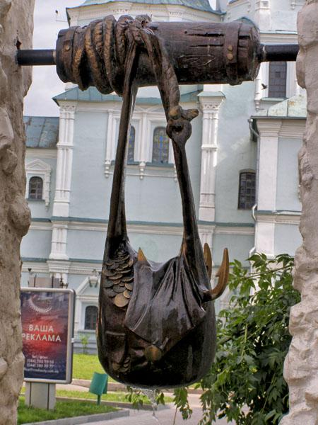
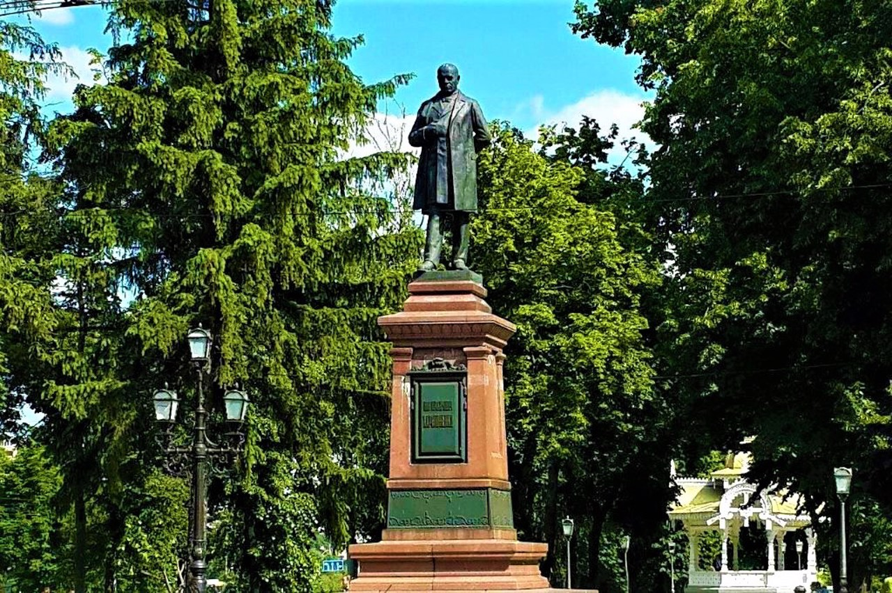
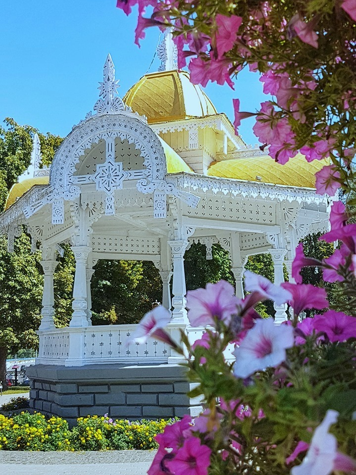
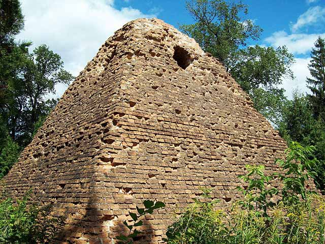

Цікаві факти про суми
-
Заснування міста (1652 рік)
Суми були засновані козаками-переселенцями з Правобережної України, які шукали захист від польського панування. Місто стало частиною оборонної лінії Московії проти Кримського ханства.
-
Суми — центр Слобідської України
У XVII–XVIII століттях Суми відігравали важливу роль як прикордонне військове місто та адміністративний центр Слобідської України.
-
Воскресенська церква (1702 рік)
Це одна з найстаріших архітектурних пам’яток Сум. Побудована в стилі козацького бароко, вона збереглася донині.
-
Легенда про три сумки
Назва походить від трьох мисливських сумок знайдених біля річки . Правда це чи ні достеменно не відомо, але саме три сумки прикрашають герб цього міста.

-
Розвиток промисловості у ХІХ столітті
Місто стало важливим індустріальним центром. У Сумах з’явилися заводи, фабрики, банки, а також активне залізничне сполучення.
-
Цукрові магнати Харитоненки
У XIX столітті родина Харитоненків зробила Суми відомими як центр цукрової промисловості. Вони також інвестували в архітектуру, освіту й мистецтво.

-
Павловський цукровий завод
Павловський цукровий завод був найбільшим у Європі! Чому Павловський? Старший Харитоненко назвав його на честь сина Павла.
-
Альтанка - Диво на місці нафти
Ця унікальна дерев'яна споруда була зведена на місці, де колись проводились геологічні розвідки на нафту (яку так і не знайшли), і стала єдиною дерев'яною будівлею в Сумах, що вціліла під час Другої світової війни.

-
Зелена зона міста
Суми є одним із найзеленіших обласних центрів України — майже половина території вкрита парками, скверами та лісами.
-
Символічний склеп-піраміда:
На центральному Петропавлівському кладовищі знаходиться склеп-піраміда, один з трьох збережених в Україні, таємниця будівництва якого досі не розкрита.
